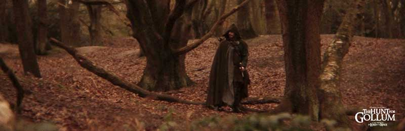
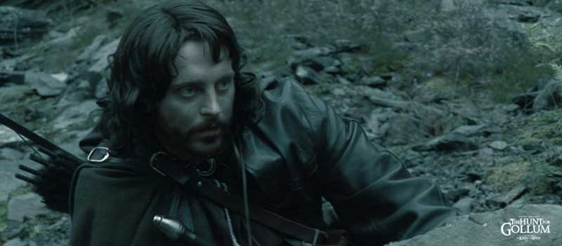
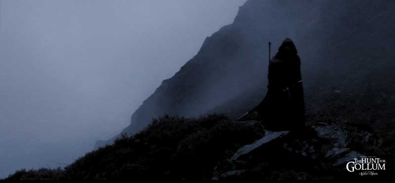

|
© 2021 Festival Art and Books. All rights reserved. |
 |
Hunting Peter Jackson The Hunt for Gollum (click here for website), a production of Independent Online Cinema (IOC), is the story of Aragorn’s quest to capture Gollum in the forest of Mirkwood before the forming of the Fellowship. The storyline is drawn from Fellowship of the Ring when Gandalf, Elrond, and Aragorn want to find Gollum in order to learn more of the Ring of Power and how much Sauron knows (an “intelligence-gathering” operation). The film takes place in the shadows of the larger story: war in Middle-earth, the rising of Sauron, and the hope to come. IOC and director/producer Chris Bouchard began production in 2007, and filming was done in the Epping Forest, Essex, UK. ICO describes The Hunt for Gollum as “an unofficial not for profit short film,” though viewers can visit their website and donate or invest in future films. While viewers may occasionally be tempted to believe (for reasons to be discussed later) that Bouchard’s film is connected with Peter Jackson’s New Line Cinema productions, The Hunt for Gollum was created by independent filmmakers who are fans of J.R.R. Tolkien. Until the last scene, Bouchard uses Hitchcockian representations of Gollum: an image of his hand quick and distant glances of the creature, and later Gollum is finally reduced to a whimpering bulk in a large sack. However, Gollum’s mysteriousness is no loss because the film is about Aragorn. Adrian Webster continues Viggo Mortensen's adaptation of Aragorn as the “reluctant hero” who must be encouraged to embrace his destiny by Arwen Evenstar, portrayed by Rita Ramnani. Anyone looking to The Hunt for Gollum for a further exploration of Professor Tolkien’s mythology will probably be unsatisfied. While the film draws on the short recount from The Council of Elrond that was truncated in the Peter Jackson film, there is only a shadow of the deeper legendarium, such as when Aragorn asks his Númenórean ancestors for guidance. The film also ends before Gollum’s escape from Mirkwood (which could have been visually spectacular). Nevertheless, value for the film might be found, if not among Tolkien purists, then among the growing number of Lord of the Rings film fans. Novelist and critic Umberto Eco argued that movies become cult classics when they “provide a completely furnished world so that its fans can quote characters and episodes as if they were aspects of the fan’s private sectarian world, a world about which one can make up quizzes and play trivia games so that the adepts of the sect recognize through each other a shared experience.” Such movies have, according to Eco, an “archetypical appeal.” As a result, viewers are able to “break, dislocate, unhinge” the film so that they can remember it “only in parts.” Thanks to Tolkien’s fastidious mythological detail, Jackson had lots of archetypical material with which to fill his films. For example, images of shadows and light are more than literary symbols, but are useful as visual contrasts between good and evil, hope and despair, and so on. |
 |
| The Hunt for Gollum borrows more from Peter Jackson than from Tolkien because Bouchard uses what Eco calls ‘intertextual frames’ that the viewer recognizes through an established textual/cinematic history. An obvious instance is the aforementioned portrayal of Aragorn, someone who needs, as Joseph Campbell writes, “magical intervention ... to plunge the hero into the unknown,” the intervener being, of course, Arwen. This interpretation of Aragorn is Jackson’s, not Tolkien’s. Twice in The Search for Gollum—once before Aragorn sets out on his quest for Gollum and seems momentarily daunted by the wilderness of Mirkwood, and later when he falls wounded to a poisoned orc dart and is about to surrender to sleep and death—luminous visions of Arwen come to him, whispering his legacy as “the heir of Elendil,” resurrecting his resolve, and helping him to carry on. This is Bouchard’s most telling intertextual connection, but his film is filled with others, including the film’s dueling soundtrack. Bouchard is an accomplished music composer, and he provides dramatic shifts in musical expressions—soft and faint at one moment, loud and heroic the next—which provides a Wagnerian feel to the film that might have some viewers at war with their volume-control remote.
Strider’s appearance, the woodland copses and mountain vistas, the juxtaposition of the Elves and whispers of evensong, the rapid death of twenty orcs, Gollum’s voice and final appearance, even the Nazgûl’s shriek are all intertextually connected to Jackson’s trilogy. The reason for this, Eco suggests, is that for directors to solve certain problems of production, “When you don’t know how to deal with a story, you put stereotyped situations in it because you know that they … have already worked elsewhere.” And with gross revenues of nearly $2.9 billion, this was an easy gamble for Bouchard. However, if The Hunt for Gollum does have a flaw, it is that it intertextually follows Jackson’s adaptation perhaps too closely. While some interesting bloopers at the film’s credits suggests the filmmakers could have had a Jackson parody in mind, the film overall seems to belie this because, as these intertextual connections suggest, The Hunt for Gollum is identical to Jackson’s in its use of motifs and archetypes. There might be other fans, besides me, who are interested in seeing a different film interpretation of Lord of the Rings: perhaps an Aragorn based on Tolkien's hero; perhaps something that goes in an experimental direction? Nevertheless, whatever its critical shortcomings, The Hunt for Gollum is an exciting work for film fans and represents for Tolkien enthusiasts another step in the popular culture evolution surrounding Lord of the Rings and the Middle-earth legendarium. Eco discusses what he calls “magic intertextual frames” where “we are interested in finding those frames that not only are recognizable by the audience as belonging to a sort of ancestral intertextual tradition but that also display a particular fascination.” Bouchard’s film suggests that Jackson’s films have already initiated this “intertextual tradition.” Now filmmakers are studying and adapting in their own efforts. Therefore, when viewers settle to watch The Hunt for Gollum, they will soon find themselves absorbed into a “preestablished and frequently reappearing narrative situation” that is comfortable because, as Eco claims, we instantly are affected by a “vague feeling of a déjà vu,” which is a pleasure most of us seek in choosing to experience a film. With this in mind, I hope that Bouchard and producers at IOC will consider other unproduced stories such as those of Tom Bombadil and Old Man Willow. And in the meantime, all of us should enjoy The Hunt for Gollum. Why not? After all, it’s free. |
 |
|
Works Cited Biographical Note |